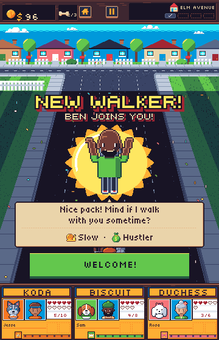
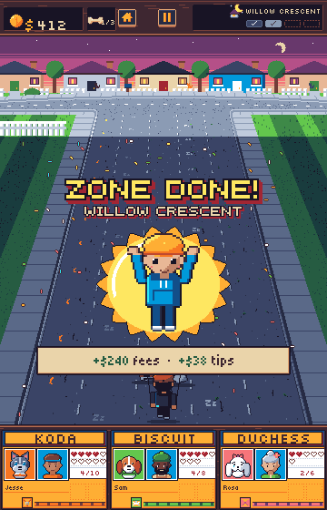
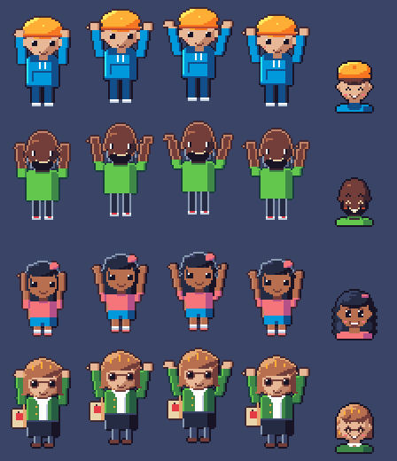
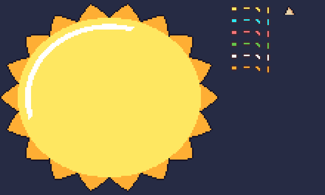

Zone celebration
After zones 1 to 3, once the fee coins land and before the upgrade card, a short celebration plays over the paused road, dimmed as under a card, so the top bar and the doghouse row stay in view. The walker cheers at 2x in front of a starburst while confetti falls. Zone 4 goes straight to the end screen.
New walker
The first finish of zone 1, 2 or 3. The unlocked walker hops in from the right in the cheer and lands on the starburst. "NEW WALKER!" in font-display at 2x, "BEN JOINS YOU!" in font-display-cream under it, the walker's line in a speech bubble pointing up at them, their pace and style with their icons, and the green "Welcome!" button (key 1), which it waits for. It replaces the zone done version for that zone.

Zone done
Every other finish of zones 1 to 3. The walker you are walking with cheers under "ZONE DONE!" at 2x and the zone's name, with the zone's fees and tips on a cream plate. It moves on by itself after 2 seconds or at a tap, so it has no button.

Headline
The 2x display line is the big moment; the cream line under it carries the name. "Willow Crescent done!" in one line is 468px wide at 2x and "WILLOW CRESCENT" alone is 350px, past the 344px a line can take, so the zone done version leads with "ZONE DONE!" and names the zone under it. "TRISTA JOINS YOU!" is 356px at 2x, so the new walker version leads with "NEW WALKER!" for the same reason. Gameplay owns the text; this is the split the lettering fits.
The cheer
The full figure at 2x reads better than the face at 2x: the raised arms and the hop carry the cheer, and the face alone is a bust like the owners' cheering faces on the badge screen. Each frame is the walker's front view (the wave drawing) with both arms raised from the shoulders in a V: a crouch, a 2px hop, the 3px top of the hop, then the landing. Trista keeps her tote on her shoulder.

face-walker-* happy face at 2x.New pieces
The starburst, the confetti bits in six colours and four tumble shapes, and the speech bubble's upward tail, at 3x on the dimmed road's navy.

New shipped art
| Key | Type, size | Tags | New walker | Zone done | Note |
|---|---|---|---|---|---|
walker-<name> | sprite, 40x60 | new cheer after wave: 4 frames, 120ms, looping | yes | yes | Drawn at 2x. The run-in is the cheer's hop tweened in from the right edge, so it needs no tag of its own. wave has no use once the sidewalk greeting goes, and can be dropped later (it is the last tag, so no frame index moves). |
ui-celebrate-burst | image, 148x132 | yes | yes | ui-sticker's look (yellow body, amber spikes, ink outline) as a round burst of 18 spikes, behind the walker. ui-sticker itself never goes on the run screen's road. | |
fx-confetti-bit | sprite, 6x6 | one per colour: amber, cyan, green, pink, white, yellow; 4 tumble frames each, 100ms | yes | yes | The game drops about 60 down the road view over 2 seconds, behind the panels; none with reduced motion. Plum rim, as every fx-. |
ui-quip-tail-up | image, 8x6 | yes | no | ui-quip-tail-down turned up, over the bubble's top rim, pointing at the walker. |
Reused as they are: fx-confetti (the 64x64 burst, as the walker lands), ui-quip and ui-panel, ui-button go, icon-pace-*, icon-style-*, font-display, font-display-cream, font-body and font-title.